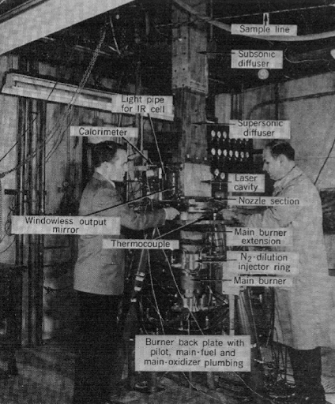
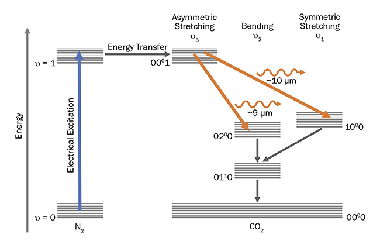
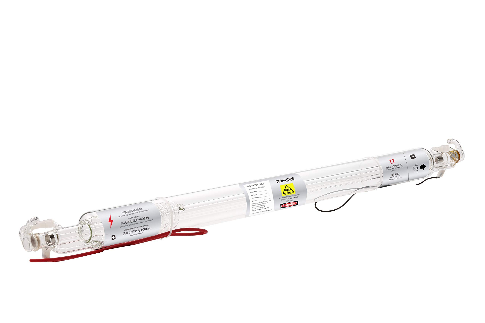
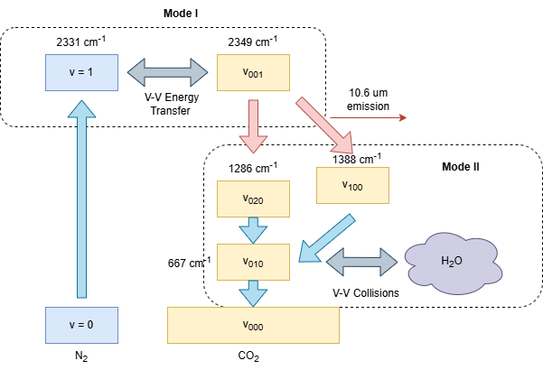
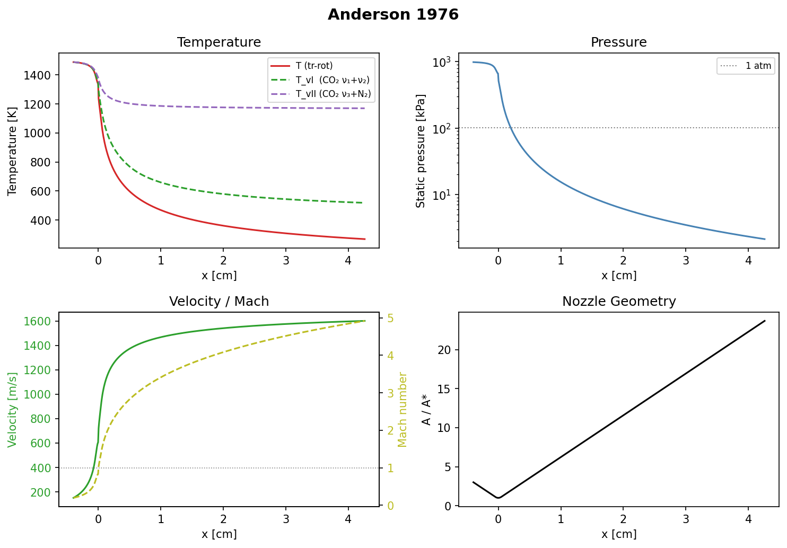
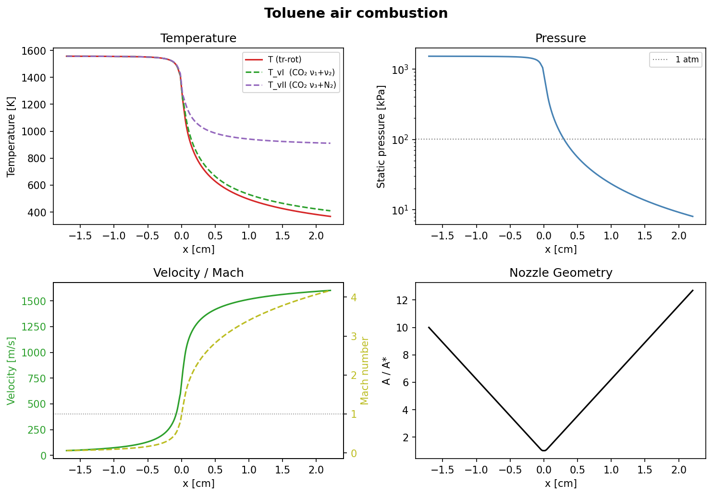
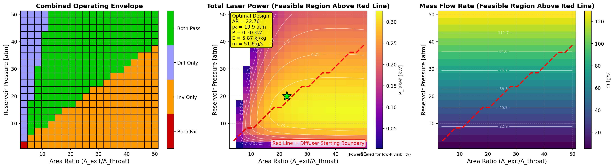
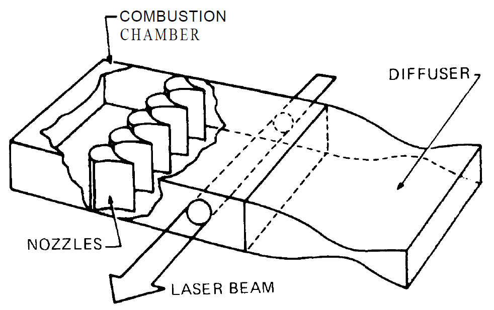

How to Design and Build a Gas Dynamic Laser

Introduction
In the 1970's gripped in the heart of the cold war American and Soviet scientists pushed the boundaries of the laws of physics to design advanced weapons and countermeasures to try and gain the upper hand. From even the first days after the invention of the first laser both sides raced to build more and more powerful lasers to fuel powerful directed energy weapons to gain an upper hand in a theoretical nuclear exchange that thankfully never came to pass. Among this early mania to design the most powerful lasers ever made the Gas Dynamic Laser was invented, a unique and bizarre form of laser that resembles a rocket engine more than a traditional laser. Born out of the same physics and laboratory used to develop the heat shields used in the Apollo program the GDL appears to break all the rules of lasers; achieving a population inversion through pure thermodynamics, powered purely by combustion, and able to achieve power densities beyond anything else.
While today it has been superseded simpler fiber lasers and more poweful chemical lasers, I have been fascinated by this bizarre laser architecture for years. Given modern advances in manufacturing processes, computing, as well as a burgeoning liquid rocketry community, I believe that today it is perfectly achievable for a hobbyist to build one of these one their own. What follows is a short overview of my research as well as some advice and guidelines for constructing your own GDL.
Physics
The physics behind gas dynamic lasers are simultaneously what makes them interesting to me as well as what has made them historically so hard to design. A gas dynamic laser combines multiple disparate fields of physics which rarely interact including aerodynamics, thermodynamics, electromagnetism and optics, as well as a healthy dose of mechanical engineering to build one.
I will try to make my brief explanation as approachable as possible to anyone, however it is reccomended that one have atleast a background in physics if you really want to understand the underlying physical processes. My explanation will be by no means exhaustive and if you want a more definitive in depth source I would heavily reccomend Anderson's excellent 1976 text[1].
Basics of Gas Lasers
To understand a gas dynamic laser one must first understand the simpler model of a gas laser. Luckily the most common form of gas dynamic laser is a CO2-N2 based laser, which shares many of the same physical properties of the common CO2 laser used often for hobby and professional laser cutters
Population Inversion
Every laser, no matter how exotic, relies on the same principle: Given a collection of atoms or molecules with quantized energy levels (either energy level of electrons in an atoms orbit, or the vibrational modes of a molecule), if one can push more of the said states into a higher level than a lower level they will amplify and intensify light energy as it passes through the medium.
This amplification effect is known as stimulated emission, an effect Einstein predicted in 1917 and the one that gives the laser its acronym (Light Amplification by Stimulated Emission of Radiation). When a molecule sits in an excited state and a photon of the right wavelength which exactly matches the energy of that state passes by, the photon can be absorbed and re-emitted twicefold by the molecule dropping down to a lower state and emitting a second photon, identical in frequency, phase, and direction to the first. If one were to create a bulk material of molecules in this state you would have a system which would exponentially amplify any light which passed through it.
The catch is that the reverse process, absorption can also happen: a passing photon can just as easily be swallowed by a molecule sitting in the lower state, kicking it up to the excited one and converting that photon into potential energy stored in the molecule. In a normal gas at thermal equilibrium there are always more molecules in the lower state than the upper one, so absorption wins and a beam of light is attenuated rather than amplified. The relative populations of two states separated by an energy gap at a temperature follow the Boltzmann distribution:
Since the exponent is always negative for a gas in equilibrium, the upper state is always less populated than the lower one. To get net amplification you need to flip this around so that the upper state is more populated than the lower state, a condition called a population inversion. Notice that no positive, finite temperature can ever satisfy this in equilibrium; a population inversion is fundamentally a non-equilibrium state, and achieving and maintaining one is the central problem of every laser. In fact in early laser literature this state is known as negative temperature (a more evocative, if less self explanatory name for the state).
CO2 Lasers
When most people picture a laser they imagine electrons jumping between energy levels in an atom, as in a helium-neon or ruby laser. Afterall that is the traditional first explanation any undergrad would encounter. But molecules can store energy in other ways too. A molecule made of two or more atoms can rotate, and crucially it can vibrate, with its atoms oscillating back and forth as if connected by tiny springs. These vibrations are also quantized, meaning the molecule can only vibrate with certain discrete amounts of energy, and the gaps between these vibrational energy levels happen to correspond to photons in the infrared part of the spectrum.
A vibrational laser is simply a laser whose population inversion lives between two of these molecular vibrational states rather than between electronic states. Instead of emitting photons through the energy released by an electron moving from a higher orbital to a lower orbital, instead all the energy is released through vibrational transitions, molecules moving from a higher to lower vibrational mode and emitting a photon in the process. This does not occur in all molecules, intuitively an inert diatomic molecule such as N2 would not be able to emit a photon as the individual atoms in the molecule have the exact same charge, thus there is no moving potential to create an EM field. Instead you need particular molecular transitions which are able to emit photon, these can be found in molecules such as carbon dioxide.
The carbon dioxide laser is the most important vibrational laser ever built, and it is the molecule at the heart of nearly every gas dynamic laser. A CO2 molecule is linear, a carbon atom flanked by two oxygens, and it has three distinct ways to vibrate, called its normal modes:
- The symmetric stretch, where both oxygen atoms move outward and inward together.
- The bending mode, where the molecule flexes away from a straight line.
- The asymmetric stretch, where one oxygen moves in while the other moves out.
The asymmetric stretch mode is the special one. A molecule excited into this mode sits at a relatively high vibrational energy, and it can drop down into the symmetric stretch (or the bending mode) while emitting a photon. The transition from the asymmetric stretch down to the symmetric stretch produces the famous 10.6 μm infrared line that CO2 lasers are known for. So if we can arrange for more CO2 molecules to be sitting in the asymmetric stretch state than in the symmetric stretch state, we have our population inversion and we have a laser.

There are two features of CO2 that make this practical. First, the upper laser level (the asymmetric stretch) is long lived, meaning a molecule will happily sit there for a relatively long time before spontaneously decaying, giving us time to build up a large population. Second, the lower laser level empties quickly, draining away through collisions so it does not clog up and destroy the inversion. A long lived upper level and a fast draining lower level are the ideal recipe for a population inversion.
In practice CO2 lasers almost never use pure carbon dioxide. They use a mixture, and the most important additive is nitrogen (N2). Nitrogen is a simple diatomic molecule with a single vibrational mode, and by a fortunate coincidence of nature the energy of its first vibrational level is almost exactly equal to the energy of the CO2 asymmetric stretch. This near perfect match means that an excited nitrogen molecule colliding with a ground state CO2 molecule can hand over its vibrational energy almost losslessly, kicking the CO2 straight into its upper laser level. Nitrogen therefore acts as an energy reservoir and a pump: it is easy to excite in bulk, it holds that energy for a long time because a lone N2 molecule has no easy way to radiate it away, and it feeds it efficiently into the CO2. Additionally, most CO2 lasers also contain small amount of dilutents, either H2O or helium, whos collisional vibrations can act a a "catalyst" by depopulating the lower energy levels more efficiently, helping maintain the population inversion.

In a conventional CO2 laser this nitrogen is excited by running an electric discharge through the gas. This is how most commercial CO2 laser tubes you can find online work, and it is for good reason. This method is excellent at create cheap, compact, high power lasers. Today on Ebay you can buy a 200 watt CO2 laser which can cut anything from metal to wood for under a few hundred dollars. However, if you truly want to scale beyond a few hundred watts to a few kilowatts you need to move past electric discharge to a method which can create population inversions in denser gasses, can reject heat more efficiently, and does not require high power electronoics, that is where the gas dynamic laser comes in.
Thermal Population Inversion
Imagine for a second that you have an amazing microscope which can zoom in on individual molecules in a box and observe each of their behavior. If you were to watch the molecules behavior as you heated up a box of monotonic helium atoms you'd observe roughly the classically expected behavior of a perfect gas. Mainly the molecules would accelerate (on average) as the gas heats up, moving faster and faster in accordance to the temperature of the gas.
Now instead imagine if you had a box of a diatomic molecule, like N2, and slowly increased the heat. Sure you would observe the some of the same behavior as helium, seeing the molecules gradually bounce around faster and faster, but you would also see other effects as well. As the molecules bounce around they'd start rotating faster and faster and even start vibrating. In physics these extra ways a molecule can move around are known as degrees of freedom, and increase with the number of bonds in a molecule.
The reason this matters is captured by the equipartition theorem, which states that in thermal equilibrium every active degree of freedom stores, on average, the same amount of energy: per molecule. For a gas of degrees of freedom this gives a molar internal energy of
where is the universal gas constant. The molar heat capacity at constant volume, , is simply how much this internal energy changes per degree of temperature:
So heat capacity scales linearly with the number of degrees of freedom. Helium, being a monatomic gas, can only store energy in its three translational directions of motion (), giving
Nitrogen, on the other hand, has those same three translational degrees of freedom plus two rotational ones () at moderate temperatures, so
The extra rotational degrees of freedom mean it takes more energy to raise the temperature of N2 by one degree than it does for helium — some of the energy you add gets siphoned off into spinning the molecules rather than speeding them up. At still higher temperatures the vibrational mode of N2 begins to activate, adding two more degrees of freedom (one kinetic, one potential) and pushing toward .
Using this equipartition theorem, along with the various energy levels of the CO2 molecule from the previous section, we can now rederive the Boltzmann distribution previously mentioned and prove that a thermal population inversion is impossible.
First we need a model for what a vibrational mode actually is. Each of the normal modes we met earlier — the symmetric stretch, the bend, and the asymmetric stretch — behaves like a tiny quantum harmonic oscillator: a set of atoms oscillating on a spring, but with the catch that quantum mechanics only permits it to hold energy in discrete, evenly spaced rungs. If a mode vibrates with frequency , then its allowed energies are:
where counts how many quanta of vibration the mode is holding (we ignore the constant zero-point energy, since it cancels out of everything that follows).
Now imagine a huge collection of these oscillators sharing a fixed pool of energy quanta, free to swap them back and forth during collisions. We want to know the most likely way for that energy to be distributed: how many molecules end up with zero quanta, how many with one, how many with two, and so on. A quick check to any statistical mechanics textbook would tell you that the population of any one level is proportional to an exponential falls off exponentially with energy:
On a macro scale this tells us how much of each vibrational mode is represented in a fixed quanity of a gas, on the microscale, this tells us for any one gas what is the "probability" we would find it in any one state. While the above is nice, it does not tell us anything unless we can normalize the probabilities. In other words, in order to have a useful metric of proportion we need to find some normalizing constant to divide each term to actually get a set of proportions which all add up to one.
Luckily for us this task is made a lot easier by the fact that each energy level is equally spaced in energy. This simple fact turns what would be a very difficult problem into a simple geometric sum[1]:
this tells us that the fraction of molecules sitting in level is . Take the ratio of any level to any other and the partition function cancels, leaving exactly the Boltzmann factor I asserted at the very start:
We have now derived it from the energy levels rather than pulling it out of thin air. And with it in hand the impossibility of a thermal population inversion becomes plain. The laser transition we care about runs between two different modes: the asymmetric stretch (the upper laser level, at energy ) and the symmetric stretch (the lower level, at ). At a single temperature their populations are
where the 's account for the degeneracy of each level. Since the upper level genuinely sits higher in energy, , the exponent is negative and the upper level is always less populated than the lower one, for every finite positive temperature you could possibly choose. To flip the inequality you would need — the "negative temperature" we encountered earlier. Heating the gas, no matter how violently, can never produce an inversion.
The crucial word in that argument, though, is single. Everything above assumed that one temperature governs every mode at once, which is precisely what equilibrium means. The entire trick of the gas dynamic laser is to break that assumption: to drive the slow-relaxing asymmetric stretch to a higher effective temperature than the fast-relaxing symmetric stretch, so that the two modes are no longer described by the same at all.
Generally things that move slowly and change temperature gradually can be assumed to be in perfect equilibrium, however when flows start moving fast enough these assumptions break down. In fact, one of the (many) lines between "supersonic" and "hypersonic" flows is the velocity at which the assumptions of chemical and vibrational equilibrium break down. It is these exact complications which make hypersonics so hard we wish to exploit to create a seemingly impossible population inversion.
The key observations that ultimately led to the development of the Gas Dynamic Laser come from Arthur Kantrowitz's work on vibrational nonequilibrium in the 1940s. Studying rapidly expanding flows, Kantrowitz showed that a gas can fall out of internal equilibrium: the vibrational energy of molecules relaxes far more slowly than their translational and rotational energy, requiring many molecular collisions to adjust to a new temperature. He called this effect "heat-capacity lag," and demonstrated that in a sufficiently fast expansion the vibrational populations effectively freeze, lagging behind the rapidly cooling flow[2]. It is precisely this freezing of the slow-relaxing CO2 and N2 vibrational modes during a supersonic expansion that a gas dynamic laser exploits to lock in a population inversion. In fact, even the seminal Kantrowitz work on this subject was based on observing this non-eqilibrium effect in CO2.

From empirical observations it can be shown that generally in a mixture of CO2 N2 gas expanded at high velocity through a converging diverging nozzle, a "three temperature system" forms, where three different modes act at different temperatures due to differences in vibrational relaxation times as follows:
- An "upper" Mode I, which includes the upper vibrational mode of N2 and of CO2 in equilibrium with each other due to their close energies, but out of equilibrium with the rest of the modes.
- A "lower" Mode II. representing all the lower levels of CO2 in equilibrium with each other but not with any outside modes.
- The base "translational" temperature, which is the temperature of the classical kinetic movement of the molecules.
What matters dynamically is how long a molecule lingers in each mode before its energy is passed along. We can summarize this with two average lifetimes: , the lifetime of the upper Mode I (the N2 reservoir feeding the asymmetric stretch), and , the lifetime of the lower Mode II as it drains down into the translational bath[2]. The upper mode relaxes far more slowly than the lower, , and it is exactly this imbalance — the slow upper reservoir refusing to dump its energy as fast as the lower one empties — that lets the two temperatures separate.
We can now stitch these relaxation times together with the quantum harmonic oscilaltor math from before to work out exactly how a non-equilbrium gas mixture can be attained. Each of the three modes still carries a mixture of oscillators each with their own distribution, however unlike the previous case now we have three different temperature we have to contend with isntead of just one. The upper laser level (the asymmetric stretch, frequency , the level) sits in Mode I at temperature , while the lower laser level (the symmetric stretch, , the level) sits in Mode II at temperature . The rate at which each of these modes decays down to equilbirium with the base "translational temeprature" can be described using Landau-Teller model, that being that the rate at which each of these temperature decays is roughly:
Where is the average vibrational energy stored in the th mode. Reusing the harmonic-oscillator partition function from before, this is just the energy-weighted average over the Boltzmann-populated rungs of a single oscillator of frequency at its own temperature :
(The stat mech literate of audience might recognizae this as the Bose–Einstein occupation of a quantum oscillator)
Now the expression above is the energy of a single oscillator. To understand how this would work in the simulation of a bulk gas, we actually want the vibrational energy held per unit mass of the gas mixture. Converting from "per molecule" to "per kilogram of mixture" introduces two factors for each mode: the number of molecules of that species per kilogram, which turns out to be the species' specific gas constant divided by Boltzmann's constant, and the mass fraction of that species, since only part of the mixture's mass is CO2 or N2. The lone that drops out simply rescales each vibrational quantum into its characteristic temperature , which is what naturally pairs with a specific gas constant to give an energy per unit mass.
Summing over every vibrational mode and grouping them by the three-temperature picture:the asymmetric stretch riding along with the N2 reservoir in Mode I at , the symmetric stretch and the doubly-degenerate bend () sitting in Mode II at — gives the specific vibrational energy of each mode group:
where is the mass fraction of species and its specific gas constant.
Plugging each of these back into the Landau–Teller relaxation equation above closes the loop: the temperatures and fix the mode energies through the Boltzmann distribution, and the Landau–Teller terms then dictate how fast those energies decay down to equilibrium in a fast moving gas.
The inverse can be computed to using methods such a newtons method. Given these relations of energy to temperature once we have simulated how much energy is in each level we can then find the temperature and occupancy of each mode, thus telling us exactly when population inversion starts.
Putting this together with basic Quasi 1D compressible flow equations, we can then build a basic simulation to determine how to actually attain a population inversion/
Simulation
The analysis above tells us that a population inversion is possible and how we can build a model to simulate it, but to actually design a useful system, find out exactly what gas mixtures and nozzle expansion ratios work, we need a simlation. To that end I wrote a small solver, GDLDesigner, which models the quasi-1D steady-state compressible flow through a converging–diverging nozzle including the two-temperature vibrational non-equilibrium effects that make the whole device work.
The model treats the flow as quasi-1D: every quantity is assumed uniform across a given cross-section and varies only along the nozzle axis , with the local area entering as a prescribed function. This is generally a canonical method of solving for flow in rocket nozzles which any rocket enthusiast would be familiar with.
Governing Equations
The solver integrates a system of five coupled ODEs in the state vector — density, axial velocity, translational temperature, and the two vibrational energies. Three of these equations are just the usual conservation laws written for a steady, area-varying flow:
namely conservation of mass, conservation of momentum, and conservation of total enthalpy (the energy equation for an adiabatic flow). The remaining two equations are what set a gas dynamic laser apart from an ordinary rocket nozzle. These equations are then supplemented with the Landau-Teller vibrational relaxation equations for our gas mixture derived above.
Numerical Method
These equations add a bit of a wrinkle into our solver. While normally nice closed form relations can be derived from the quasi-1d flow equations, adding in vibrational non-equilbrium makes a nice closed form equation impossible, requiring a numerical solver for the differential equations. This is where Anderson and my work diverges. Limited by the computers of his time, Anderson chose a time-marching solver, computationally cheaper but less stable[3]. I on the other hand (with the help of Claude) used a space stepping initial value problem (IVP) solver, integrating the state of the gas step by step along the nozzle axis, trading a bit of computational cost for the stability needed to easily explore a wide variety of design conditions.
To build the space stepping IVP solver the system above is rearranged into five explicit derivatives describing how the five state variables — density , velocity , translational temperature , and the two vibrational energies and — all evolve as they travel down the nozzle:
where is the local frozen speed of sound, the Mach number, the frozen specific-heat ratio, and the translational–rotational specific heat. Carrying temperature as a state variable rather than total energy is what makes this clean: with in hand the pressure, internal energy, and speed of sound can all be written explicitly, so every right-hand side is a closed algebraic expression that scipy.integrate.solve_ivp can evaluate directly. The two relaxation times and (from the Millikan–White correlations and mixing rules) are recomputed at every step from the local temperature and composition.
The integration is seeded at the reservoir from stagnation conditions: density and temperature from the isentropic stagnation state, velocity from the mass flow rate and local area, and both vibrational energies initialized in equilibrium with the stagnation temperature, . That same stagnation state fixes the total enthalpy which is conserved all the way down the nozzle.
To feed the solver realistic inlet conditions there is also a combustion front-end built on Cantera, which works out the stoichiometry and stagnation conditions of the burnt gas for a combustion-driven design. Two reference scenarios ship with the project as configuration files: a direct-heating case reproducing Anderson's textbook treatment[1], and a combustion-driven case based on Itaya et al.[3], which lets the model be validated against published results before being trusted on a novel design.
With this machinery in place we can finally design ourselves a gas dynamic laser. Starting from a combustion chamber, fuel chemistry, and nozzle contour we can the derive the ultimate performance of theoretical designs and figure out exactly how hard it is to build one.
Results
Taking all this together, we can create a complete simulation of a lasers idealized performance from the following design parameters:
- Gas composition (fraction N2 / CO2 / H2O + dilutents) or Fuel / Oxidizer chemistry (computed using Cantera)
- Gas initial temperature (either from direct heating or computed using Cantera combustion simulation)
- Chamber pressure
- Nozzle geometry (function describing nozzle from stagnation condition to exit)
Here is a resulting simulation of a setup of an idealized gas dynamic laser, based on measurements from Andersons work:

Here is a more modern design based on a system with air toluene combustion:

In addition to solving for individual systems, the wealth of compute available today also lets us grid search through design parameters allowing us to find the optimal design for a set of conditions:

More detailed explanation of the simulation as well as more configurations can be found in the github repo.
Limitations
While this work did give a good baseline to work off of the simulation is still limited. Here are some following limiations which maybe be expanded upon in future work:
- Empirically derived rates are still based off an 1960's era work in the subject. More update models for vibrational lifetimes may be available
- The three temperature model does a poor job of accounting for the effect of H2O and other dilutents on the gas such as O2, a more complex model like a six temperature model may cede more accurate results (cite this https://link.springer.com/chapter/10.1007/978-3-642-53962-6_8)
- Can be expanded to higher dimension to give a more accurate accounting of performance
- Current simulations are done on a simple wedge nozzle design, a more optimal nozzle geometry should be used
Overall the simulation is still limited but provides a solid foundation for my design work.
Design

In some sense a gas dynamic laser is just a rocket powered lasers - they share many components such as combustion powered converging diverging nozzles, high pressure air fuel combustion chambers, and thus share many of the same design techniques. However they are not one hundred percent alike, you can't just plug and off the shelf motor into some laser optics and go. Whereas a rocket engine wishes to simply maximize the amount of thrust which can be extracted from the fuel mixture, a gas dynamic laser is attempting to coordinate a careful balance of combustion conditions and chemistry coupled into specific flow conditions. As a result while they can still share a lot of design elements and ideas on the combustor side (I take a lot from the half cat rocketry reference book), anything downstream of the combustor is unique to a gas dynamic laser and has unique design challenges not found in a rocket engine. Still I took a lot of inspiration from other hobby liquid rocket engine designs as a guide as what is possible for a hobby designer. While I didn't explicitly take any designs from them the half-cat rocketry design guides where a huge help.
To turn the simulated design into reality four separate components must be designed, each of which have interlinking performance and requirements and numerous sub-components listed here:
- The gas generator
- Fuel / Oxidizer chemistry
- Injector design
- Support fluids system
- Nozzle
- Nozzle expansion ratio / geometry
- Throat Area
- Cooling system
- Supersonic diffuser
- Optics
- Windows
- Mirrored cavity
As follows I will go through each design component, listing the basic tradeoffs one must make as well as my choice for my homemade design.
Gas Generator
The gas generator system is the most important and interesting aspect of gas dynamic laser design. As shown above as long as long as N2 CO2 and H2O can be created at sufficient ratios and temperatures population inversion can be attained. The amazing thing about this particular mix of gasses is that it just happens to be exactly the mixture you get when you burn any hydrocarbon in air! However, there is one catch. The sorts of exhaust mixtures you get from burning a typical hydrocarbon are vastly different than the idealized ratios you want for high performance. Moving away from the ideal ratios of N2 CO2 and H2O can degrade performance and even kill the population inversion altogether. It is this conflict between ease of design and performance which drives some of the more interesting designs proposed historically.
Fuel Choice
The ideal ratio of N2:CO2:H2O by molar ratios is roughly 100:10:1 for maximum laser performance (the precise ideal amount depends on temperature, pressure, and nozzle geometry), while on the other hand burning typical hydrocarbon in air contains vastly more H2O and less CO2 than ideal. For example methane, with a 1:4 carbon to hydrogen ratio burned stoichiometrically with oxygen results in a CO2 to H2O ratio of 1:2, far from the ideal 10:1. Increasing the complexity of the molecule increases the efficiency a little, a saturated long chain hydrocarbon approaches a carbon to hydrogen of 1:2, giving a 1:1 CO2 to H2O ratio after being burned. Efficiency can yet still be increased by adding more Carbon-Carbon bonds to our ideal fuel, with a fuel such as Acetylene or Benzene having a carbon to hydrogen ratio of 1:1, giving a CO2 to H2O ratio of 2:1. Still a far cry from the ideal 10:1 but still a lot better than methane.
Of course, more efficiency can still be found by substituting some of the hydrogens with nitrogen compounds, however then you start running into stability problems. While the ideal fuel from a stoichiometric compound would look something like an aromatic carbon with most of its hydrogens replaced with nitrogen groups, what I just described is TNT, not exactly the most friendly thing to fuel a rocket engine.
The table below collects a handful of candidate fuels, ordered roughly from the easiest and safest to handle toward the most energetic (and most dangerous). Notice how the CO2:H2O ratio steadily improves as we trade hydrogen for carbon and then for nitro groups, right up to hexanitrobenzene which produces no water at all:
| Fuel | Formula | CO2:H2O (burned in air) | Flame temp. in air | Safety | Toxicity | Notes |
|---|---|---|---|---|---|---|
| Methane | CH4 | 1:2 | ~1950 °C | Flammable; explosive in air | Asphyxiant, not toxic | Cheap, ubiquitous; needs pressurized storage |
| Carbon monoxide | CO | 1:0 | ~2100 °C | Flammable | Highly toxic (binds hemoglobin) | Carries its own oxygen, produces no water; low energy density |
| Ethanol | C2H5OH | 2:3 | ~1950 °C | Flammable | Low | Cheap, easy to handle; the most benign option |
| Acetylene | C2H2 | 2:1 | ~2500 °C | Flammable; can detonate under pressure | Low (asphyxiant) | Welding gas, widely available; stored dissolved in acetone |
| Cyanogen | C2N2 | 1:0 | ~4525 °C‡ | Flammable; one of the hottest flames known | Highly toxic (cyanide) | Produces CO2 + N2 directly with no water; near-ideal but exotic and hazardous |
| Benzene | C6H6 | 2:1 | ~2100 °C | Flammable | Carcinogen | Common solvent; toxicity is the main concern |
| Toluene | C7H8 | 7:4 | ~2050 °C | Flammable | Moderate (CNS depressant) | Widely available; practical aromatic fuel |
| Trinitrotoluene (TNT) | C7H5N3O6 | 14:5 | ~2700 °C† | High explosive; needs detonator | Liver toxin | Regulated; serious handling/legal hazard |
| Hexanitrobenzene (HNB) | C6N6O12 | 1:0 | ~3000 °C† | Sensitive high explosive | Toxic | Lab-only; hard to synthesize, produces no water |
| Nitrocellulose | ~C6H7N3O11 | 12:7 | ~2400 °C† | Shock/friction-sensitive; self-ignites when dry | Mild | Guncotton/smokeless powder; degrades over time |
Flame temperatures are approximate stoichiometric adiabatic values; in practice reservoir temperatures run lower depending on mixture and heat loss. † For the energetic materials these are approximate self-decomposition / detonation temperatures rather than flame temperatures in air, since they carry their own oxidizer. ‡ Cyanogen's figure is for combustion in pure oxygen; diluted in air it runs much cooler. The nitrocellulose formula varies with degree of nitration.
Beyond the data in the chart there are a few other considerations as well. While generally higher temperature means higher performance, it only goes up to a point. Eventually at too high temperature CO2 (around 2300K)begins to disassociate resulting in non-equilbiirum chemistry downstream which can degrade performance. Additionally a major constraint on higher performance fuels is handling them. While fuels like HNB and Acetylene seem great, they tendency to spontaneously explode limits their usefulesness.
For my own personal design I landed on toluene as my fuel of choice. It perfectly straddles the boundary of accessibility, toxicity, and performance by being essentially the highest performing liquid fuel I can buy from the hardware store. This is also a fuel which was commonly used in many historical designs for essentially the same reasons, its hard to beat the toluene in any tradeoff study where safety and fuel accessibility is a concern. Of course this still leaves future room for experimentation, all of the fuels on the list have by experimentally tried and verified to work in gas dynamic lasers in some form or another. In particular solid powered gas dynamic lasers using common nitrocellulose (gunpowder) may be another accessible path for hobby creators.
Oxidizer Choice
Compared to the litany of fuel choices oxidizer choice is more mundane. Ultimately the design comes down to tuning the nitrogen to oxygen ratio to maximize performance. This really leads to three practical choices for oxidizers:
- Nitrous oxide: 66% Nitrogen, 33% Oxygen, higher energy but unideal ratio. Self pressurizing and liquid.
- Air: 80% Nitrogen 20% Oxygen, better ratio lower energy, very low density.
- Custom N2 O2 mixture: tuned for fuel choice, best performance but hardest to get
Ultimately for hobby design the choice is obvious, compressed air is high performance, easy to attain, easy to handle, and most important of all cheap. In a project full of hard problem and tough tradeoffs this is the one welcome reprieve. Even at larger industrial or military scales the obvious upsides of air combustion made it the most obvious option for most historical designs.
Fuel Oxidizer Ratio
Fuel Oxidizer ratio is another design lever we have to optimize our design which turns out to be quite useful. Varying the fuel air ratio of our combustion from the stoichiometric value () yields some important tradeoffs for creating an optimal design mainly:
- Reducing reservoir temperature
- Increasing nitrogen ratio
- Adding in more dilutents (extra oxygen for air rich, various carbon compounds for fuel rich)
It is difficult to account for the effects of all of these, especially the presence of dilutents which could effect kinetic rates and optics in ways that are difficult to capture in our simplified model, but I found that an ox rich design generally is easier to design for due to the lower reservoir temperatures and more favorable nitrogen to carbon dioxide ratio.
Desiring a lower reservoir temperature may seem contradictory to the previous statements that laser performance scales with temnperature, which is true in a general sense. However, higher temperature drive stricter requirements for our nozzle design in order to achieve population inversion. Which in turn drives harder requirements for manufacturing tolerances and makes it more difficult to efficiently couple our exhaust stream back into the atmosphere with our diffuser.
Nozzle
The nozzle is probably the single most important component for dictating our laser performance while at the same time also requiring the most complex modelling. Every other design decision up and downstream of the nozzle couples into laser performance and drives requirements for nozzle design, thus it is important to understand how the two free variables we have for choosing our nozzle geometry, throat height and expansion ratio drive and are driven by variables across the rest of the system.
In a traditional rocket engine, the one a common hobby designed might make, generally two rough approximations are true:
- Rocket performance per propellant mass is independent of size (i.e. you can approximate the performance solely through area ratios)
- The whole rocket can be designed as rotationally symmetric.
Neither of these cases are true in the case of gas dynamic laser design due to our reliance on non-equilibrium effects.
Unlike a traditional 1D model of a rocket nozzle, the addition of finite non-equilibrium vibrational lifetimes to our model necessitates that our nozzle design necessarily take into account the absolute size of the nozzle, not just the relative sizes. This is because while variables like mass flow rate can scale nicely and evenly with respect to flow area, the lifetimes of our states are fixed variables which do not scale per unit mass. This means that while a nozzle with a 10mm^2 throat may experience population inversion, a nozzle with a 10cm^2 throat may not, even if all other variables (reservoir pressure, temperature, chemistry) are kept equal.
This can intuitively be explained with some back of the envelope math. Let's say we need our gas to be cooled from maximum temperature to its minimum in under 25 us in order to create a population inversion. If our gas moves through the expansion part of our throat at an average velocity of mach 3 (~1000 m/s), then it would mean our nozzle can have a maximum length of 2.5 cm. Given that the average expansion ratio of a gas dynamic laser nozzle is atleast 10 or more, this would mean that it would necessitate that our nozzle area to start with is quite small, on the order of square millimeters not centimeters.
Two clever design tricks we can use to break
Diffuser
Optics
My Design
Demo
References
- J. D. Anderson Jr., Gasdynamic Lasers: An Introduction. New York: Academic Press, 1976.
- A. Kantrowitz, "Heat-Capacity Lag in Gas Dynamics," The Journal of Chemical Physics, vol. 14, no. 3, pp. 150–164, 1946. https://doi.org/10.1063/1.1724115
- Itaya et al., "Combustion-driven gas dynamic laser," Proc. SPIE, vol. 3092, 1997.
- J. D. Anderson Jr., "A Time-Dependent Analysis for Vibrational and Chemical Nonequilibrium Nozzle Flows," AIAA Journal, vol. 8, no. 3, pp. 545–550, 1970. https://doi.org/10.2514/3.5703
This clean geometric sum holds for a single harmonic oscillator with one vibrational frequency. CO2 is the more complicated case: it has three independent normal modes, each with its own frequency (and the bending mode is doubly degenerate), so the full molecular partition function is a product of three such sums rather than a single one. The argument here is unchanged — every mode still follows its own Boltzmann factor — but the bookkeeping is more involved. See Anderson[1] for a complete treatment. ↩︎
Each of these two effective lifetimes is itself an average over a whole network of individual vibrational relaxation processes, each with its own rate, weighted by the composition of the gas mixture. A more detailed derivation of and from the gas composition and the individual vibrational lifetimes can be found in Anderson[1]. ↩︎
A more detailed treatment of Anderson's original time-marching formulation can be found in his 1970 paper[4]. ↩︎